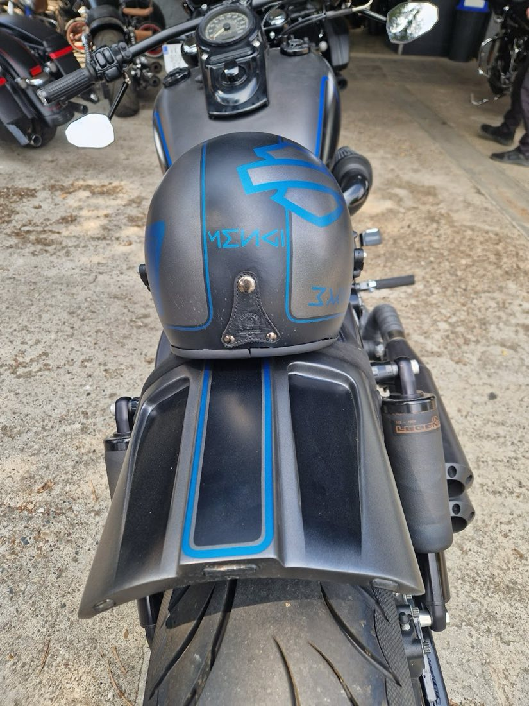
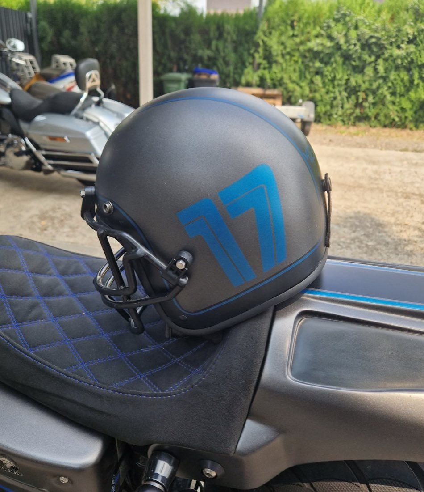
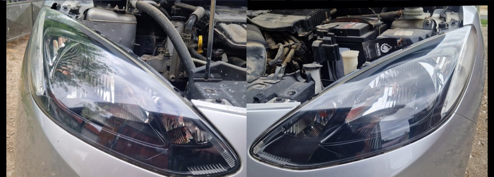
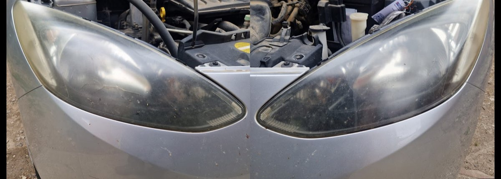
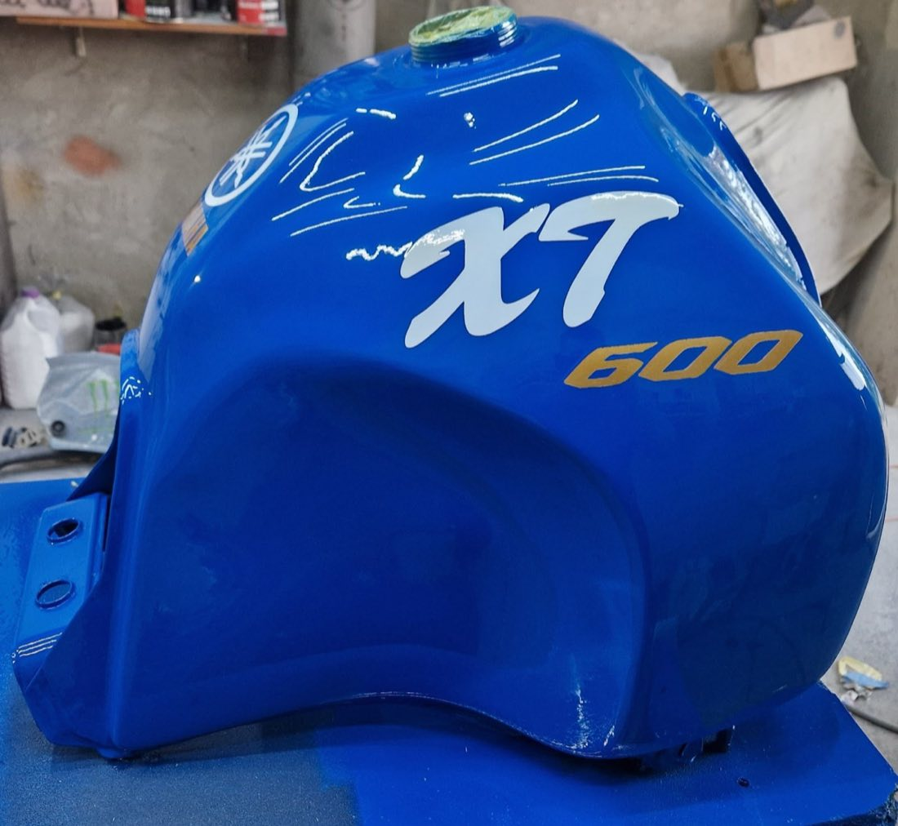
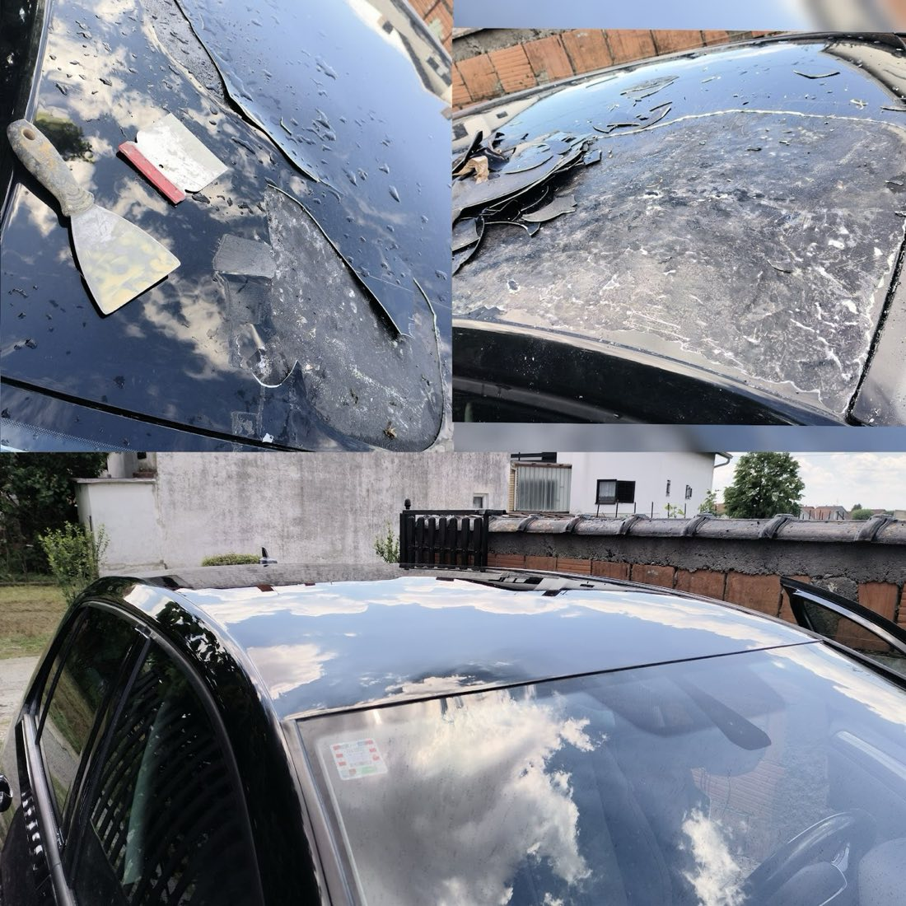
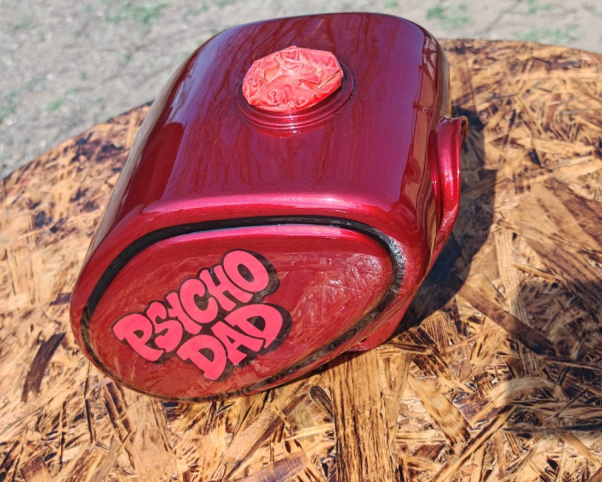

Limarija i sanacija oštećenja
Popravak udubljenja i oštećenja nakon udarca te izmjena dijelova limarije, od gradskih automobila do BMW-a serije 6.
HM workshop u Vinkovcima sanira udubljenja, mijenja dijelove limarije, lakira, uklanja hrđu i polira farove. Za motocikle i kacige radi airbrush oslikavanje po vašoj ideji.


Sve što je na Facebooku i Googleu objavljeno kao rad radionice: limarija, lak i završna obrada, za automobile, motocikle i mopede.
Popravak udubljenja i oštećenja nakon udarca te izmjena dijelova limarije, od gradskih automobila do BMW-a serije 6.
Bojanje branika i dijelova karoserije, obnova laka koji se ljušti te poliranje haube od smole.
Saniranje hrđe na limovima karoserije te varenje branika, kako stoji u objavama radionice.
Požutjeli i mutni farovi poliraju se do prozirnosti, za bolji izgled i bolje svjetlo.
Natpisi, brojevi, linije i motivi na kacigama, spremnicima i blatobranima, izrađeni ručno prema vašoj zamisli.
Bojanje motocikala, plastika za mopede i felgi u boji po želji, uključujući zelene i crvene naplatke.
Povucite klizač i usporedite iste farove prije i nakon poliranja. Fotografije je objavio HM workshop.






Izdvojeno iz Google recenzija (5,0 od 24 ocjene). Tekst je prenesen uz ispravak tipfelera.
„Čovjek mi je radio plastike za projekt na mopedu, oslikavao upravo kako sam ja zamislio te je još pridonio ljepoti i završnoj obradi svojim sugestijama, idejama i profesionalizmom.”
Srđan K. · Google
„Gospodin Hrvoje odlično radi svoj posao. Mijenjao branik, bojao, polirao haubu od smole i farove. Sve pohvale.”
Nikola G. · Google
„Bojanje motora i oslikavanje Suzuki K5 1000 odrađeno profesionalno, svaka preporuka.”
Stjepan S. · Google
„Komunikacija, profesionalnost, sve prema dogovoru 5+”
Tomislav S. · Google
„Odličan majstor, odradio sve po dogovoru. Sve pohvale.”
Boris P. · Google
U Vinkovcima, na adresi Slavija ul. 90-1, 32100 Vinkovci. Lokaciju možete otvoriti na Google kartama.
Nazovite 095 383 2227 ili pošaljite upit preko obrasca na ovoj stranici. Opišite vozilo i oštećenje, a fotografija oštećenja olakšava dogovor.
Da. Radionica boja i oslikava spremnike, blatobrane, plastike i kacige za motocikle i mopede, što se vidi i na fotografijama radova.
Ručno oslikavanje zračnim kistom: natpisi, brojevi, linije i motivi na kacigama, spremnicima i dijelovima vozila, prema vašoj ideji.
Požutjeli i mutni farovi poliraju se do prozirnosti. Primjer prije i poslije poliranja nalazi se gore na stranici.
Najbrže je nazvati. Ako ne stignete, ispunite obrazac i poruka će se otvoriti kao SMS spreman za slanje.
Otvori na Google kartama